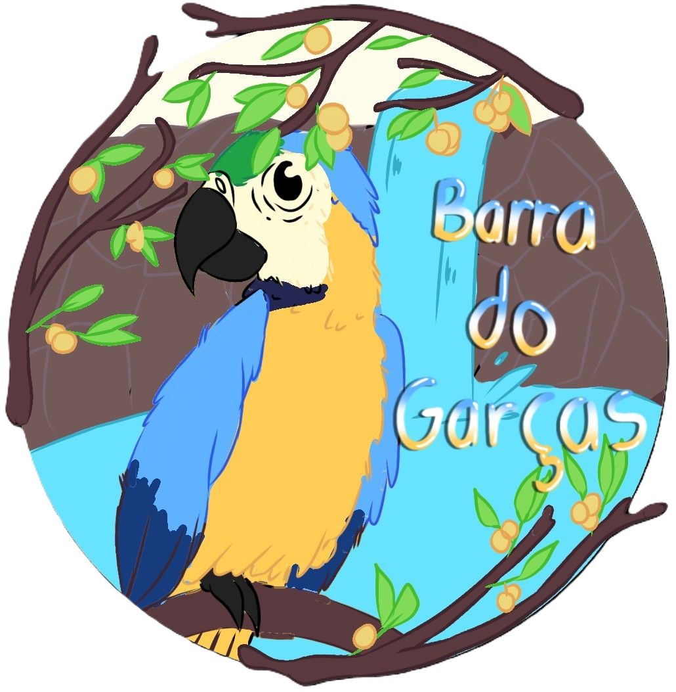
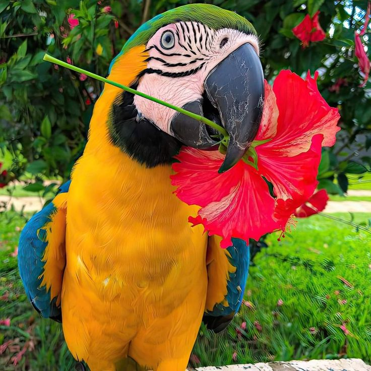
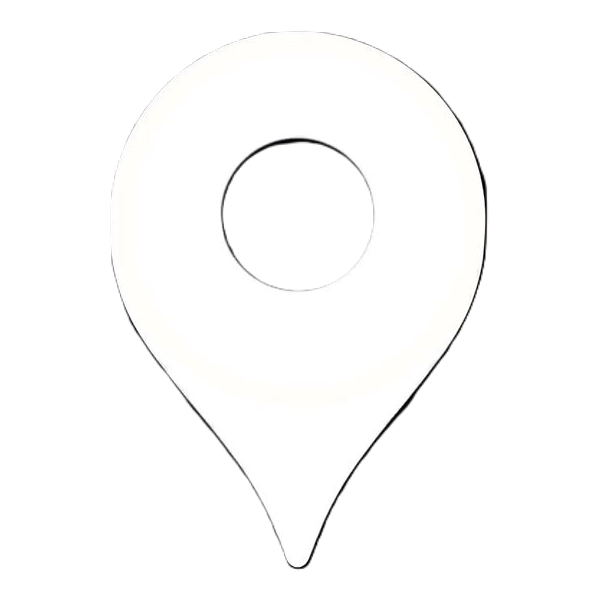
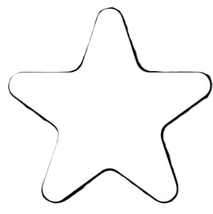

Inicio Sobre Notícias
Inicio Sobre NotíciasBarra do Garças
Mato Grosso
Onde os rios se encontram e os sonhos fluem. Prepare-se para viver uma experiência inesquecível no coração do Brasil! Em Barra do Garças, natureza, aventura e misticismo se encontram em um só lugar. Mergulhe nas águas quentes das fontes naturais, explore cachoeiras escondidas na Serra Azul, contemple paisagens de tirar o fôlego e sinta a energia única de um destino que encanta todos os sentidos.


Locais próximos
Iremos localizar e informar o mais rápido possivel a você.
Locais procurados
Fique sabendo do lugares mais pesquisados para se visitar.

Locais bonitos
informe-se de locais mais bonitos para ir.